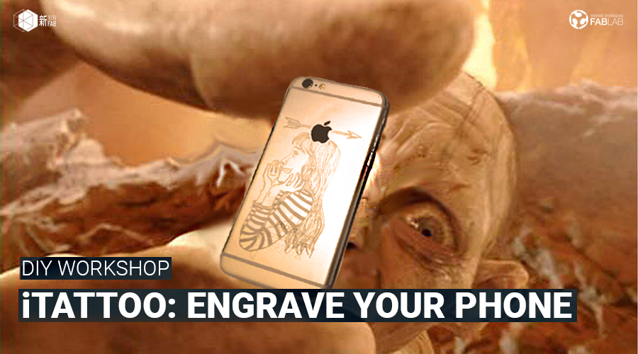
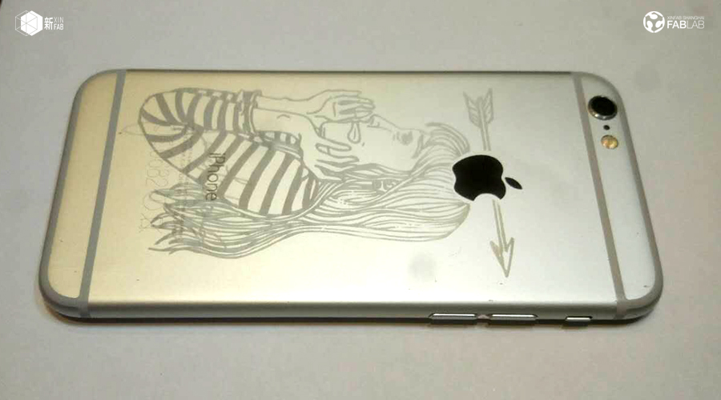
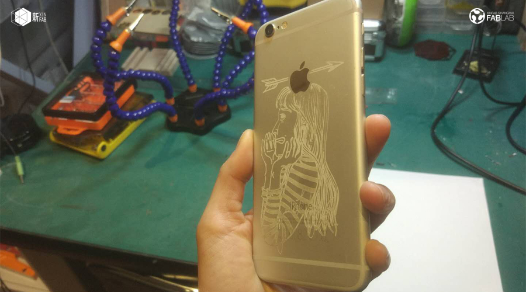
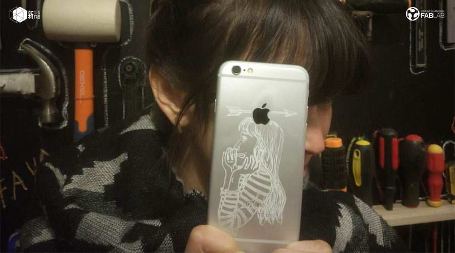
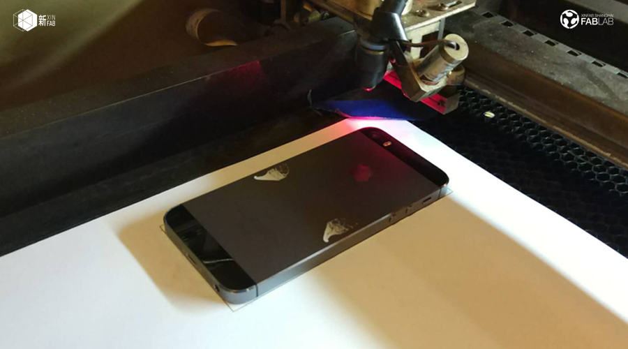
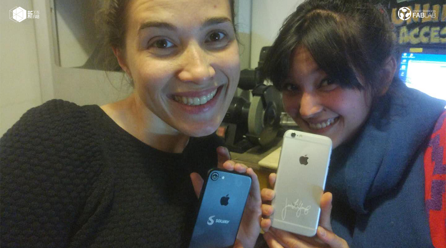

WORKSHOP
DIY WORKSHOP: iTattoo - Engrave on your phone! | 雕刻你的手机!

When:Saturday, December 23, from 1pm to 5pm
Where: Xinfab - Kangding East Rd, Lane 45, Building no.5, Room 102, Jing'an District
Price: Price: 400 RMB (Wechat 410 RMB)
Your phone is your whole life, especially here in China since you can't even order food or scan QR codes without it. Wanna make it look really special, as precious and as special as it is to you? Get it a tattoo!
In this workshop you're going to learn how to engrave an image on your smartphone**. We're going to use the iPhone as an example, but it can be any phone that meets the requirements below. You can use your existing image*, a signature, a logo, just type some words or draw your own (like Jade did - see pictures below) and be sure nobody else on planet Earth has the same design as you.
Just like a tattoo, it's forever!
If you don't feel 100% safe to do it on your beloved phone during the workshop, don't worry. We're going to provide you with an iPhone shell to play with and run your tests on it.
*Almost any image can be engraved. However, because of time limitations we're going to use only Black and White(pure B&W only! No greyscale).
**You can use the same method to tattoo your laptop or tablet, however because of time limitations we're going tolimit it to phones during the workshop. You can still join and learn, then become a Xinfab member and use your credits to do it on your laptop.
Requirements: Your phone MUST BE MADE OF ANODIZED ALUMINIUM (any model of iPhone 5 and above, for sure. Other brands/models can also be done if they're of the same material, so check your phone's specs and find out what it is made of)
Disclaimer: Albeit tiny, there is always a risk of damaging your phone or that the engraving doesn't come out as nice as you expect. We do not take responsibility for any issue that may occur.
Things you should bring:
// The image you want to use (B&W ONLY - no greyscale, no color). Best if it is high resolution (we can try to improve it, but no guarantee)
_
_
_
_
_Your passion, curiosity, and questions
// If you're going to hand draw something more complex, bring the drawing ready (black and white too). If you can draw fast or if it's a simple shape, you'll be allowed time to do it here.
// Your phone!!
// Your laptop and mouse
// Install Adobe Illustrator before you come (Trial version is OK: http://www.adobe.com/products/illustrator/free-trial-download.html)
//
// Your passion, curiosity, and questions





WORKSHOP SCHEDULE
// STEP 1: Prepare the image
_Overview of Illustrator
_Different ways to prepare an illustration
_Time to draw, write, etc
// STEP 2: Tattoo your phone
_Prepare the file for the laser cutter
_Learn how to use the laser cutter
_Practice, test and if you're brave enough, tattoo your phone!
///////////////////////////////////
HOW TO SIGN UP
SIGN UP DEADLINE: FRIDAY, DECEMBER 15
// ALIPAY (400 RMB)
Transfer the workshop fee to pay@xinfab.com (please indicate your phone number on the payment details so we can contact you!)
// CASH 400 RMB)
Come by our lab during our opening hours to book your spot.
// WECHAT (410 RMB - Wechat charges a fee)
Enter our shop from your phone via this link and proceed to payment with Wechat Wallet
Questions? Send us an email to info@xinfab.com.
///////////////////////////////////
ABOUT THE TEACHER

Jade Young is a Brazilian communicator and Xinfab's manager. Before joining Xinfab, Jade worked in communication for the United Nations (International Labour Organization) and the International Committee of the Red Cross, in Geneva, Switzerland. She created posters and graphics for both organizations during her experience with them. She then complemented her education and experience in International Relations with a Master's in Advertising Design and Communication at the Barcelona School of Design and Engineering, in Barcelona, Spain.
While humanitarian values and non-profit philosophy are her credo, creating is her passion. Jade has loved to draw from a very early age and has been playing with different making techniques for over a decade. She has also been into tech since she got her first computer way back in 1998 and has been playing with all kinds of software ever since.
时间：12月23日星期六从下午1：00到5：00
地点： 新Fab- 静安区康定东路45弄5号102室
价格： 400元（微信410元）
***英语车间！老师的汉语不怎么样哦！****
你的手机是你吸的空气，没它就无法点餐或扫描QR码。想让它看起来真的很特别，像你一样珍贵和特别？给它做纹身！
在这个车间中，你将学习如何在智能手机上刻制图像**。我们将以iPhone为例，但可以是任何符合以下要求的手机。你可以使用现有的图像*，签名，徽标，只需键入一些字词或绘制自己的图像（如Jade所做的 - 请参阅下面的图片），并确保地球上没有其他人拥有与你相同的设计。
就像一个纹身，永远的！
如果你在车间坊期间不刚觉百分之百安全地在亲爱的手机上直接进行操作，请不要担心。 我们给你一个iPhone外壳来玩，并运行你的测试。
*几乎所有的图像都可以雕刻，但是由于时间的限制，我们只能使用黑白（纯黑白，没有灰度）。你负责你的形象。
**您可以使用相同的方法纹身笔记本电脑或平板电脑，但由于时间限制，我们将在车间期间将其限制为手机。你仍然可以加入并学习，然后成为新fab会员，并使用你的学分在笔记本电脑上完成。
要求：你的手机必须是阳极氧化铝建设的（任何型号的iPhone 5及以上）。如果你没有iPhone，请检查你的手机规格。
免责声明：尽管很小，但总会有损坏手机的风险，或者雕刻不如您期望的那么好。我们不承担任何可能发生的问题的责任。
你应该带的东西：
// 你想要使用的图像（仅限B＆W - 无灰度，无颜色）。 最好是高分辨率（我们可以尝试改进，但不能保证）
// 如果你想手绘自己的图案，请带绘画 （黑白）。如果你能快速绘制或者如果它是一个简单的形状，你会被允许在这里做的时间。
// 你的手机！！
// 笔记本和充电器
// 鼠标（推荐）
// 你来之前在你的笔记本电脑上安装Adobe Illustrator！ （这里免费下载：http://www.adobe.com/products/illustrator/free-trial-download.html)
// 你的激情，好奇心和问题
///////////////////////////////////
研讨会日程安排
//第一步：准备图像
_Illustrator概述
_准备插图的不同方法
_间画，写等的时间
//第2步：纹身你的手机
_准备激光切割机的文件
_了解如何使用激光切割机
_练习，测试，如果你够勇敢，纹身你的手机！
///////////////////////////////////
如何注册
注册截止日期：12月15日（星期五）
// 支付宝（400 RMB）
将研讨会费用转至 pay@xinfab.com（请在付款明细上注明您的电话号码，以便我们与您联系！）
// 现金（400 RMB
由我们的实验室在我们的开放时间来预订你的位置。
// 微信（410 RMB - 微信收费）
有问题吗？ 发邮件到info@xinfab.com.
///////////////////////////////////
关于教师
Jade Young是巴西传播者和新fab的经理。 Jade在加入新fab之前，先后在瑞士日内瓦的联合国（国际劳工组织）和红十字国际委员会工作。 她为两个组织制作了海报和图像。 然后，她在西班牙巴塞罗那巴塞罗那设计与工程学院的广告设计与传播硕士学位中补充她的国际关系教育和经验。
尽管人道主义价值观和非营利哲学是她的信条，创造是她的激情。 Jade从小就喜欢画画，十多年来一直在用不同的制作技巧。 自从1998年获得第一台计算机以来，她也一直在科技领域工作，从那以后一直在玩各种各样的软件。